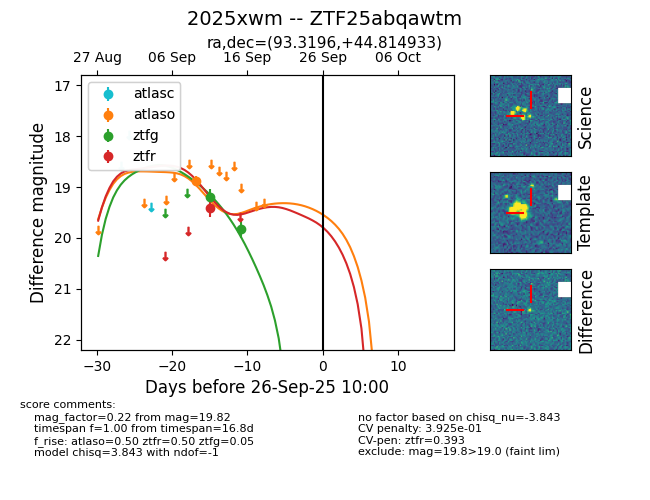
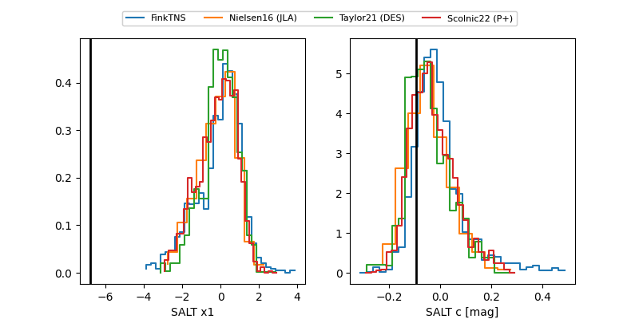

FINK: ZTF25abqawtm
Lasair: ZTF25abqawtm
ALeRCE: ZTF25abqawtm
TNS: 2025xwm
YSE: 2025xwm
ZTF25abqawtm (ztf,fink)
2025xwm (tns,yse)
equatorial (ra, dec) = (93.3196,+44.81493)
galactic (l, b) = (168.7074,+12.51822)


last atlaso=18.88, ztfg=19.82, ztfr=19.42
1 atlaso, 2 ztfg, 1 ztfr detections